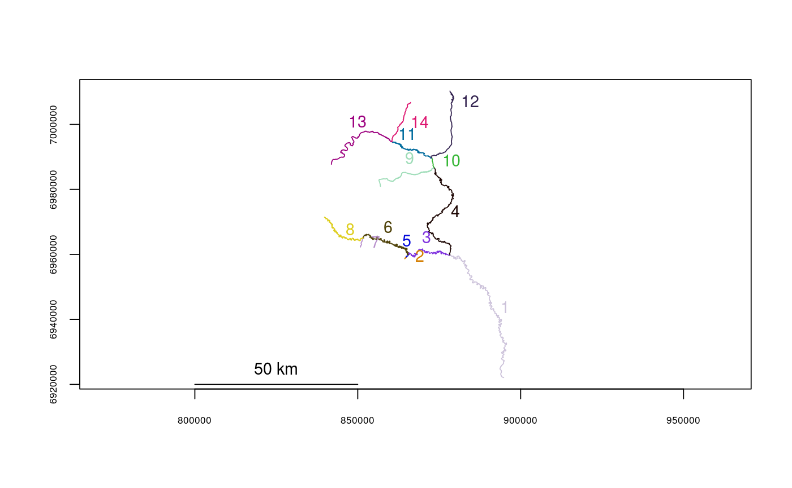

Called internally within riverdistance. Detects the sequential route from one river network segment to another.
detectroute(start, end, rivers, verbose = FALSE, stopiferror = TRUE, algorithm = NULL)
| start | Segment number of the start of the route |
|---|---|
| end | Segment number of the end of the route |
| rivers | The river network object to use |
| verbose | Whether or not to print all routes being considered (used for error checking). Defaults to FALSE. |
| stopiferror | Whether or not to exit with an error if a route cannot be
found. If this is set to |
| algorithm | Which route detection algorithm to use. If set to
|
A vector of segment numbers corresponding to the ordered route.
data(Gulk) plot(x=Gulk, cex=1)detectroute(start=6, end=14, rivers=Gulk)#> [1] 6 3 4 10 11 14tstart <- Sys.time() detectroute(start=120, end=111, rivers=abstreams, algorithm="sequential")#> [1] 120 103 106 109 112 116 124 132 134 133 135 142 153 152 144 136 127 115 114 #> [20] 107 108 111tend <- Sys.time() tend - tstart#> Time difference of 0.7406039 secsdata(abstreams) tstart <- Sys.time() detectroute(start=120, end=111, rivers=abstreams, algorithm="Dijkstra")#> [1] 120 103 106 109 112 116 124 132 134 133 135 142 153 152 144 136 127 115 114 #> [20] 107 108 111tend <- Sys.time() tend - tstart#> Time difference of 0.003764868 secststart <- Sys.time() detectroute(start=120, end=111, rivers=abstreams, algorithm="segroutes")#> [1] 120 103 106 109 112 116 124 132 134 133 135 142 153 152 144 136 127 115 114 #> [20] 107 108 111tend <- Sys.time() tend - tstart#> Time difference of 0.001726627 secs